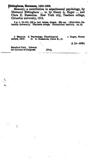

Memory: A Contribution to Experimental Psychology
Book·Hermann Ebbinghaus, 1885·论记忆

Ebbinghaus recorded his own forgetting using nonsense syllables and drew the first forgetting curve.
- Author
- Hermann Ebbinghaus
- Year
- 1885
- Difficulty
- Intermediate
- Kind
- Primary text
- Schools
- Experimental Study of Memory
- Core theories
- Forgetting Curve
Editions
- English edition Memory: A Contribution to Experimental Psychology Hermann Ebbinghaus (trans. Henry A. Ruger and Clara E. Bussenius) · Dover reprint of the 1913 Teachers College edition · 1964 Open Library ↗